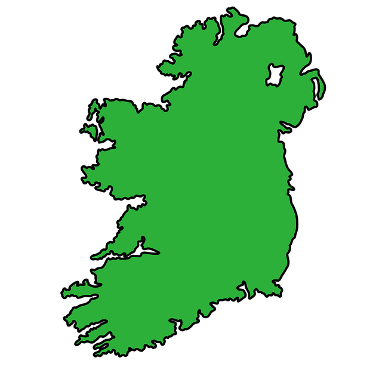

This is a website for a college assignment
The Gaelic Athletic Association (GAA) is Ireland’s largest sporting organisation. It is celebrated as one of the great amateur sporting associations in the world. It is part of the Irish consciousness and plays an influential role in Irish society that extends far beyond the basic aim of promoting Gaelic games. It was founded on November 1 1884 at a meeting in Thurles, Co. Tipperary, by a group of spirited Irishmen who had the foresight to realise the importance of establishing a national organisation to make athletics more accessible to the masses and to revive and nurture traditional,indigenous sports and pastimes. The Association today promotes Gaelic games such as Hurling, Football, Handball and Rounders and works with sister organisations to promote Ladies Football and Camogie. The Association also promotes Irish music, song and dance and the Irish language as an integral part of its objectives. The GAA has remained an amateur Association since its founding. Players, even at the highest level, do not receive payment for playing and the volunteer ethos remains one of the most important aspects of the GAA. more information....
Brief overview of each sport
Gaelic Football is the most popular of the Gaelic games and is played on a rectangular grass pitch with H-shaped goals at each end. This game is high octane, full of speed, precision, accuracy and intensity. It is played with a round ball and both hands and feet are used to control and pass the ball. There are 15 players on each team, with only 1 referee. The primary objective is to score by driving the ball through or over the goals. If the ball is sent over the bar of the goals, this equates to One Point. If it goes under bar, into the goalmouth, this equates to Three Points. The female version of the game is known as Ladies’ Gaelic football and is very similar to the men’s game, with just a few minor rule changes.
Hurling is a stick and ball game, played by teams of 15 on a rectangular grass pitch with H-shaped goals at each end. The stick that we use is called a ‘hurley’, or a camán in the Irish language, while the ball is called a sliotar. The primary objective is to score by driving the ball through the goals or putting the ball over the bar and thereby scoring a point. By putting the ball into the net, and scoring a goal, the team is awarded three points.
The female version of Hurling is known as Camogie and is very similar to hurling, with just a few minor rule changes. The name ‘camogie’ was invented in 1903 and the first camogie matches took place in 1904. The games are truly magnificent spectacles, with speed, accuracy, intensity and passion to the fore. Go to the top